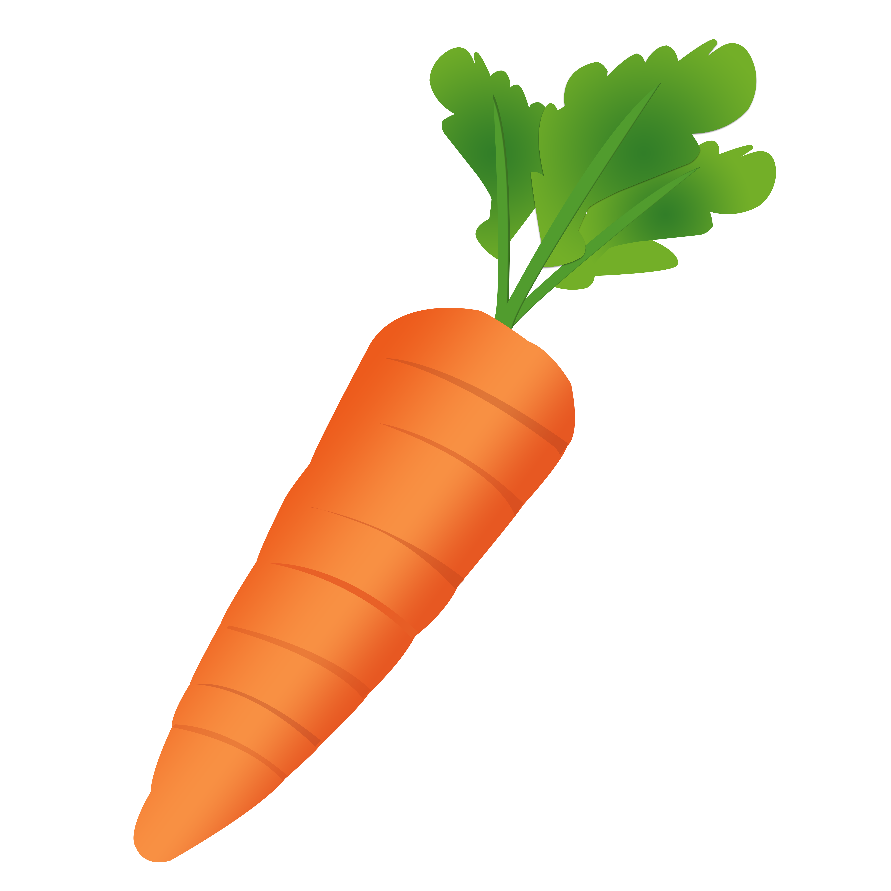

En esta sección se presentan diferentes tipos de cultivos comunes que puedes tener en tu huerta.
| Cultivos Populares | |||
| Nombre | Descripción | Imagen | Usos Comunes |
| Zanahoria | Tuberculo comestible de color naranja. |  | Cruda, cocida, en sopas o jugos. |
| Lechuga | Hoja verde ideal para ensaladas. | Ensaladas, wraps. | |
| Maíz | Grano. | Arepas, tortillas, sopas. | |
| Albahaca | Hierba aromática. | |
Pesto, pizzas, ensaladas. |
| Pimiento | Fruto colorido y sabroso de distintas intensidades. | Asado, relleno, salteado. | |